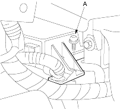
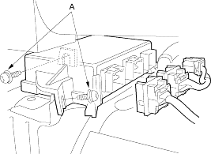
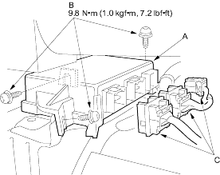

- Disconnect the battery negative cable and wait at least 3 minutes before beginning work.
- Disconnect the driver's and front passenger's airbag connectors (see page 23-32).
- Disconnect the side airbag connectors (see page 23-32).
- Disconnect both seat belt tensioner connectors (see page 23-32).
- Remove the dashboard centre lower cover (see page 20-219).
- Pull down the carpet, then remove the torx bolt (A) from the SRS unit.

- Disconnect the connectors and remove the two torx bolts (A), then pull out the SRS unit.

- Install the new SRS unit (A) with Torx bolts (B), then connect the connectors (C) to the SRS unit; push it into position until it clicks.
NOTE: When tightening the Torx bolts to the specified torque after replacement, be careful to turn them in so that their heads rest squarely on the brackets.

- Reinstall the dashboard centre lower cover (see page 20-219).
- Reconnect the driver's and front passenger's airbag connectors (see page 23-32).
- Reconnect the side airbag connectors (see page 23-32).
- Reconnect both seat belt tensioner connectors (see page 23-32).
- Reconnect the battery negative cable.
- After installing the SRS unit, confirm proper system operation: Turn the ignition switch ON (II); the SRS indicator light should come on for about 6 seconds and then go off.